Primer artículo
Este espacio se completa con el contenido que defina Human Technologies.
Captura automática de producción, paros y calidad en cada máquina de su planta de manufactura. Su equipo deja de anotar y empieza a analizar.
Los datos de la máquina no son fáciles de obtener. Los capturamos directamente de ella, sin depender del papel ni de Excel.
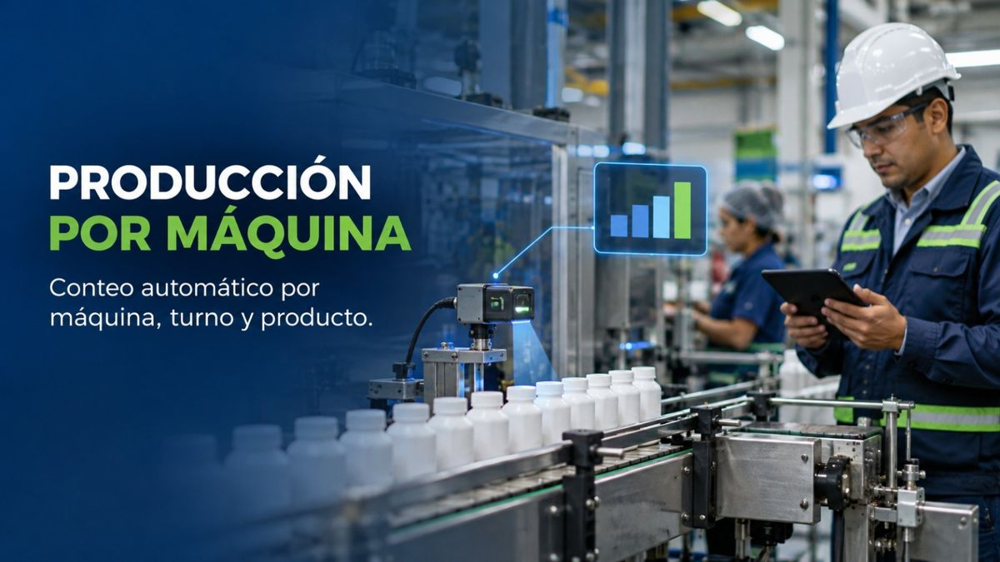
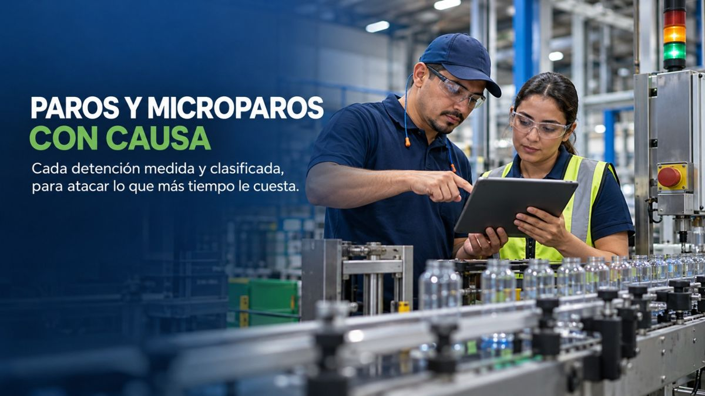
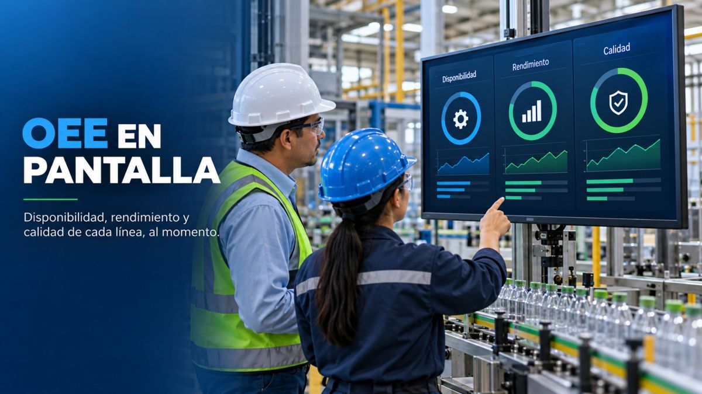
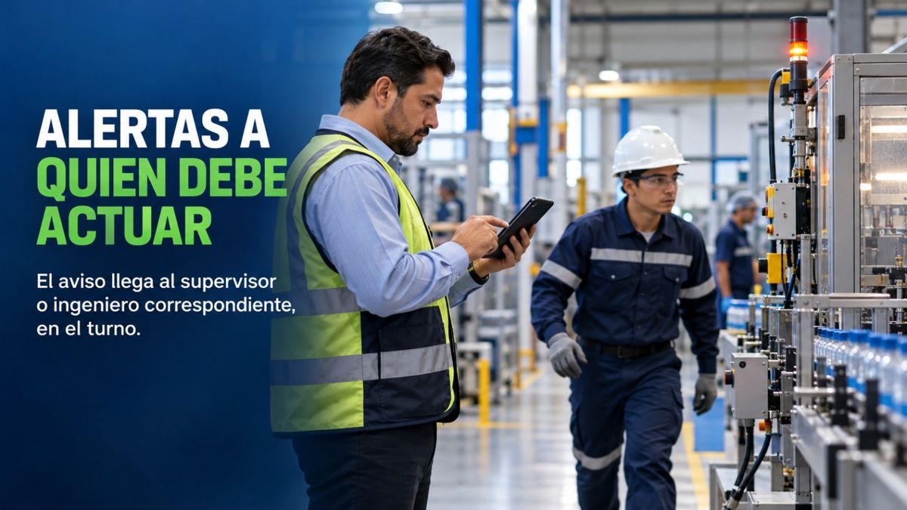
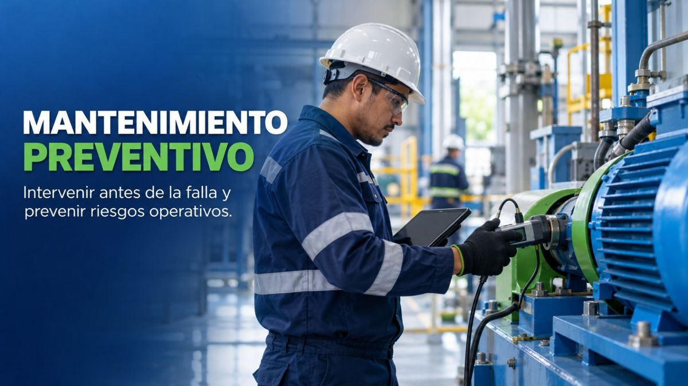
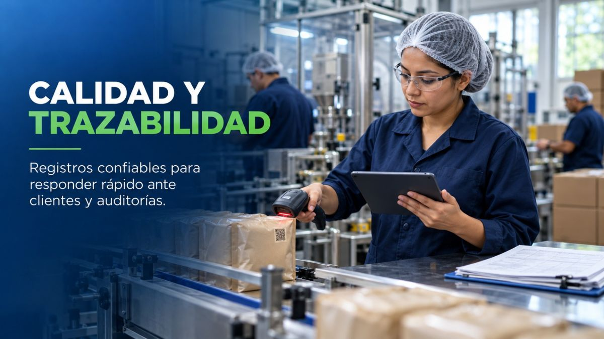
Cada sector tiene sus propios retos en la línea. Estos son algunos en los que trabajamos.
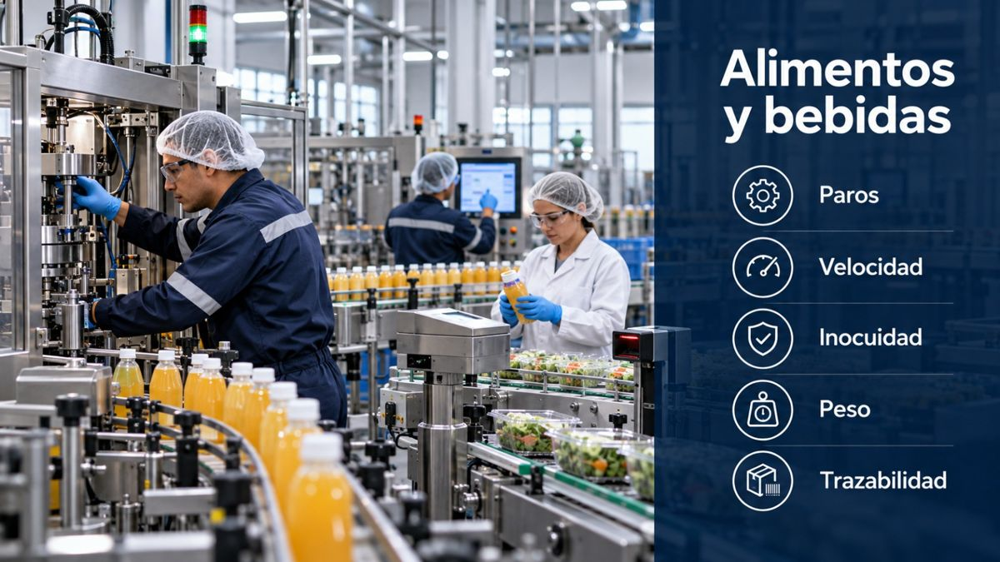
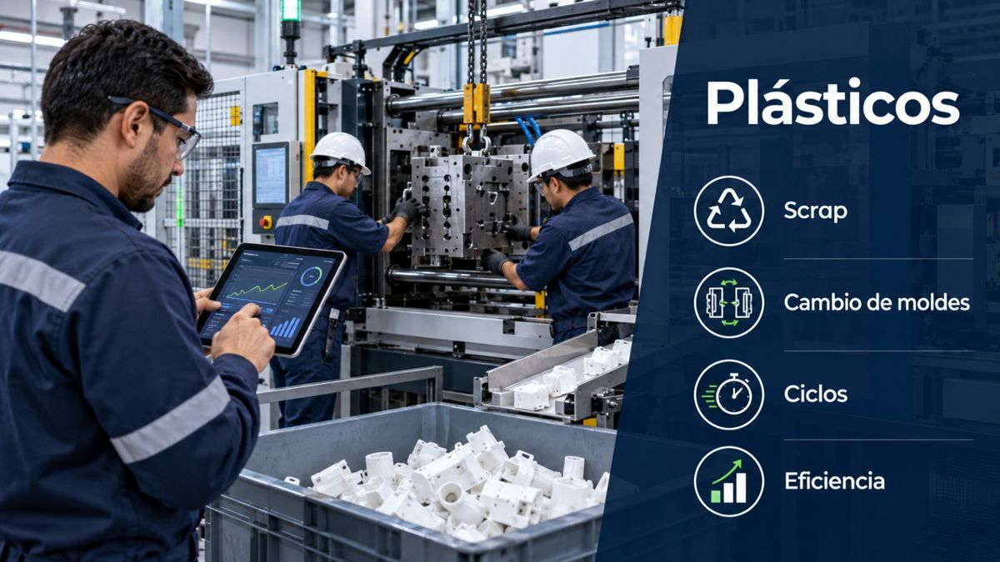
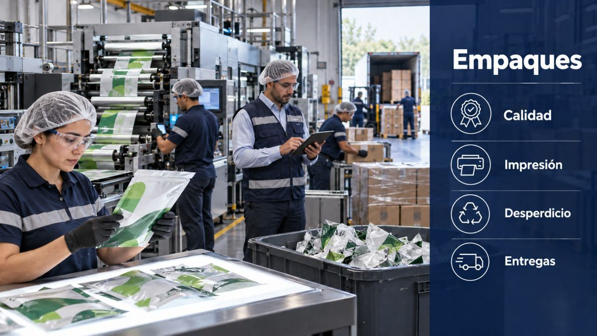
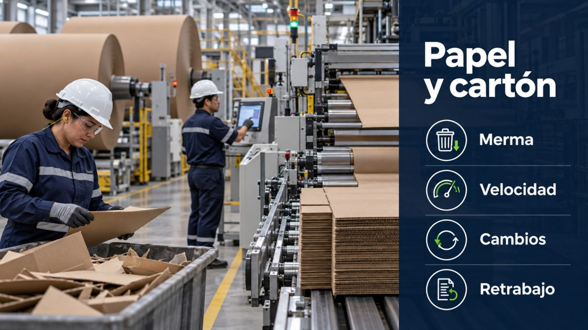
La tecnología hace el trabajo repetitivo. La gente, lo importante.
No sustituye a nadie. Quita lo repetitivo para que el equipo se dedique a las tareas que dan valor: analizar, mejorar y decidir.
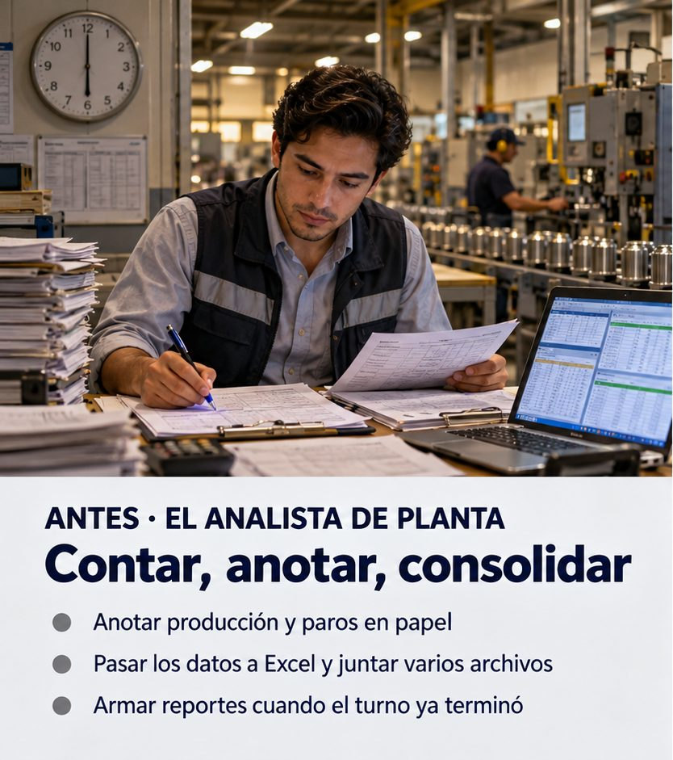
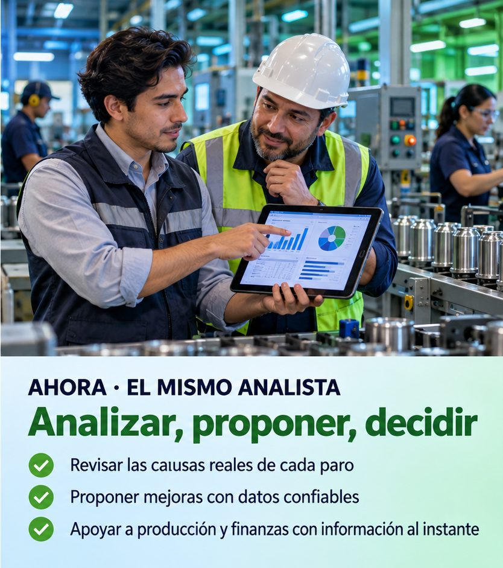
El resultado: equipos más alineados, porque todos miran la misma información, y equipos más eficaces, porque dedican su tiempo a lo que mejor saben hacer.
Reportes instantáneos y dashboards para tomar decisiones en el momento en que son útiles, no cuando el cierre ya pasó.
Costo total de propiedad y operación por equipo.
| Estado | Horas | Costo asignado | % del TCO |
|---|---|---|---|
| Operación | 700 | Q168,000 | 70.0% |
| Setup | 100 | Q24,000 | 10.0% |
| Parada programada | 80 | Q18,000 | 7.5% |
| Parada no programada | 120 | Q30,000 | 12.5% |
| Total | 1,000 | Q240,000 | 100.0% |
Criterio de costeo: recursos por equipo y consumo por estado. Las tarifas pueden variar según el estado.
| Causa | Horas | Costo asignado | % acumulado | Acción a evaluar |
|---|---|---|---|---|
| Mecánica | 50 | Q12,500 | 41.7% | Inspección de componentes |
| Eléctrica | 30 | Q7,500 | 66.7% | Revisar alimentación |
| Falta de material | 25 | Q6,250 | 87.5% | Ajustar abastecimiento |
| Ajuste de calidad | 15 | Q3,750 | 100.0% | Validar parámetros |
| Para cada parada no programada | Se registra |
|---|---|
| Evento | Fecha, hora y descripción |
| Equipo | Código y nombre del equipo |
| Orden | Número de orden de trabajo |
| Causa | Causa estandarizada |
| Recurso | Personal y/o servicio involucrado |
18 h liberadas aún sin monetizar.
| Concepto | Valor |
|---|---|
| Producción adicional vendible | 30,000 frascos/mes |
| Tasa incremental | 1,000 frascos/h |
| Margen de contribución unitario | Q0.60 |
| Inversión inicial | Q48,000 |
| Beneficio mensual estimado | Q24,000 |
Confirmar en planta las 48 h de recuperación estimada y su sostenibilidad.
Asegurar la demanda de 30 h/mes y verificar que no exista otro cuello de botella.
Margen neto de costos variables adicionales; gasto evitable separado, sin duplicidades. Recuperación simple = inversión / beneficio mensual.
Caso de éxito en una planta de empaques, presentado por el proveedor de la solución.
Haga un cálculo rápido con sus propios números.
Cálculo orientativo con los datos que usted ingresa. No es una promesa de resultado.
Entendemos su negocio, su planta y la madurez de personas, procesos, datos y tecnología.
Una línea o una máquina crítica, con indicadores acordados y línea base comparable.
Con resultados a la vista, se extiende a más líneas y se integra con su ERP.
Ideas prácticas para la manufactura guatemalteca: datos de planta, gestión del cambio y decisiones financieras.
Este espacio se completa con el contenido que defina Human Technologies.
Este espacio se completa con el contenido que defina Human Technologies.
Este espacio se completa con el contenido que defina Human Technologies.
Human Technologies es la firma de transformación digital para la manufactura guatemalteca: tecnología, gestión del cambio y liderazgo para que la mejora se sostenga, porque las personas la usan.
Conozca Human TechnologiesCuéntenos qué produce y qué le gustaría mejorar. Le responderemos para coordinar un diagnóstico de madurez industrial.
Prototipo: el formulario aún no está conectado.